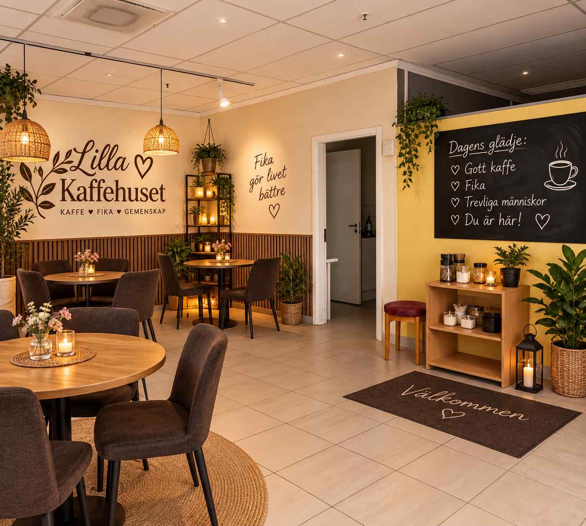
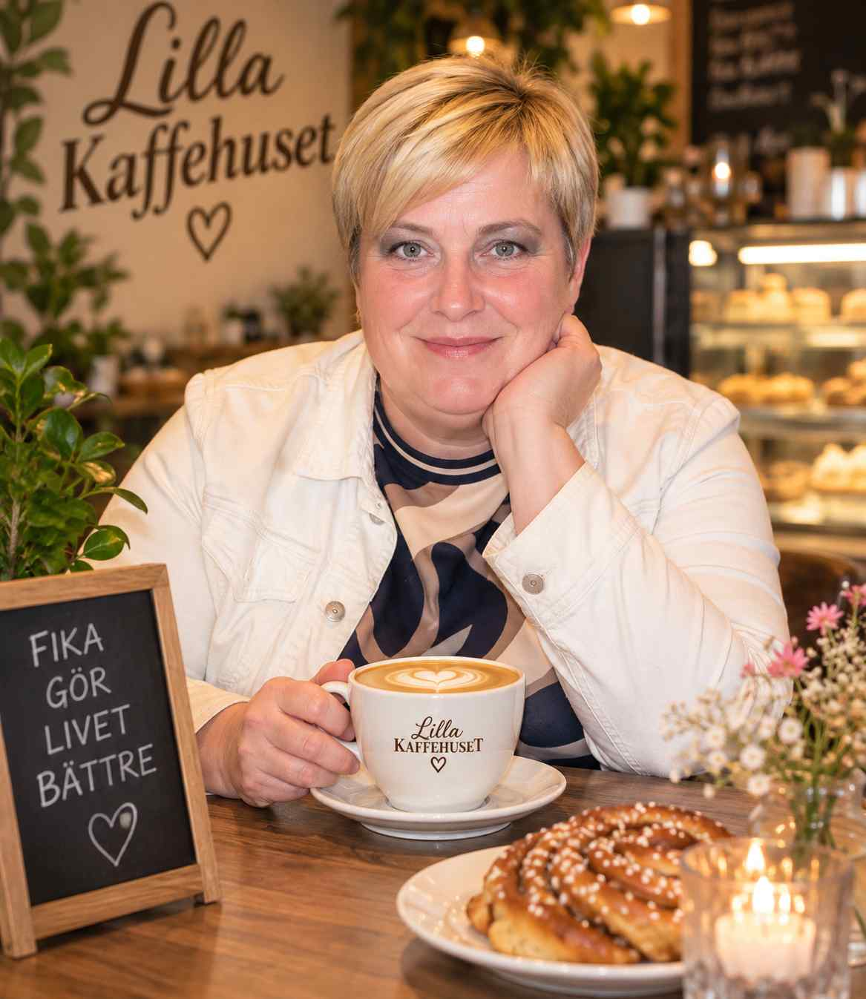
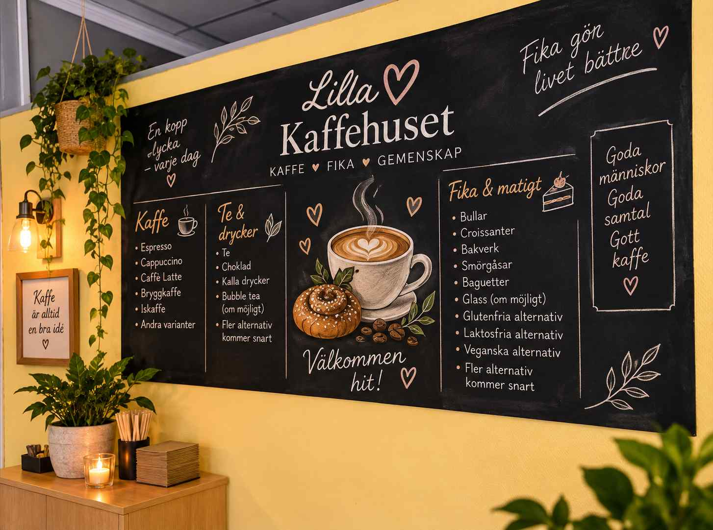
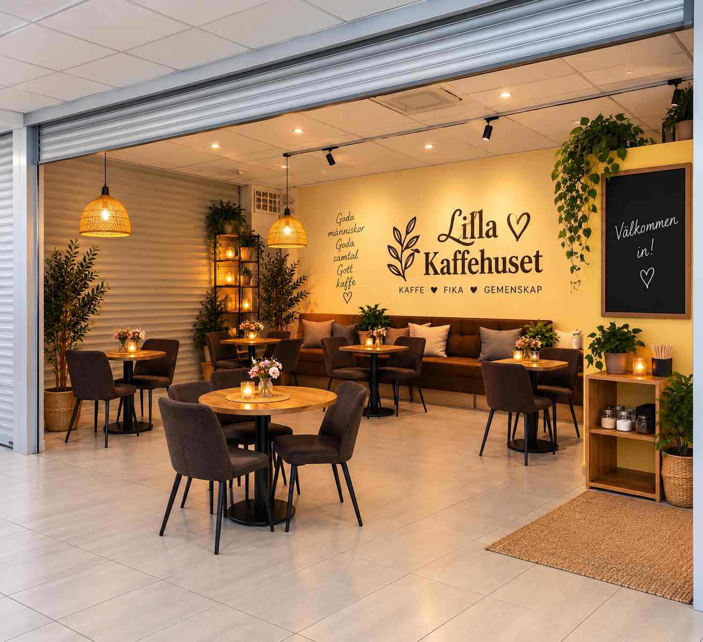

Gott
Kaffe, fika och matigare alternativ med fokus på kvalitet.
Ludvika
Välkommen till Lilla Kaffehuset i Engelbrekt Gallerian – ett varmt och personligt café där gott kaffe, fika och gemenskap står i centrum.
Bra kaffe • Matiga mackor • Fika för fler
Välkommen in
Lilla Kaffehuset är tänkt som en liten och familjär mötesplats mitt i Ludvika. Här ska du kunna slå dig ner med en god kopp kaffe, träffa en vän, komma med familjen eller bara ta en lugn stund för dig själv.
Vi vill kombinera god kvalitet med rimliga priser och skapa ett café där så många som möjligt känner sig välkomna.

Kaffe, fika och matigare alternativ med fokus på kvalitet.
Ett mindre lokalt café där gästen får stå i centrum.
Alternativ för olika smaker, behov och åldrar.
Vi planerar separata och tydligt märkta alternativ för glutenfritt och laktosfritt – och ett större fikautbud än bara biskvier. Även veganskt, vegetariskt och fika utan tillsatt socker finns med i planen.
Vi arbetar för att erbjuda fika och alternativ för olika behov. Sortimentet kan variera – fråga alltid personalen om ingredienser och allergener.

Om oss
Jag har länge tyckt om den känsla som uppstår när människor möts över en kopp kaffe. Ett café kan vara så mycket mer än bara en plats där man köper något – det kan bli en liten paus i vardagen, en mötesplats och en plats där man känner sig hemma.
Därför vill jag skapa Lilla Kaffehuset.
Min tanke är ett litet och personligt café mitt i Ludvika där människor i olika åldrar kan känna sig välkomna. Du ska kunna komma hit med en vän, med familjen eller ensam och slå dig ner en stund.
Jag vill lägga stor vikt vid gott kaffe, trevligt fika, matigare alternativ och ett vänligt bemötande – samtidigt som priserna ska vara så rimliga som möjligt.
Lilla Kaffehuset ska inte försöka vara en stor kedja. Jag vill istället skapa något mindre, varmare och mer personligt – ett kaffehus som blir en naturlig del av Ludvika.
Varmt välkommen in 🤎

Matigt och prisvärt
Alla är inte sugna på något sött. Därför planerar vi matigare smörgåsar, baguetter, wraps och sallader med olika fyllningar – färdiga och kalla alternativ, både för dig som vill sitta ner och för dig som behöver något att ta med.
Endast visuella exempel – sortimentet utvecklas och utbudet kan variera.
För alla
En kopp kaffe och tid att prata.
Kom ensam, läs något eller koppla av.
Gratis Guest Wi-Fi planeras för gäster som vill sitta en stund.
Barnfamiljer ska känna sig välkomna och en liten barnhörna planeras om möjligt.

Planen är att skapa en liten barnvänlig hörna där yngre gäster kan sysselsätta sig en stund medan de vuxna fikar – om lokalens utformning och utrymme tillåter det.
Gratis Guest Wi-Fi planeras för våra gäster. Perfekt för dig som vill läsa, arbeta eller studera över en kopp kaffe.
Friska smaker och kalla drycker
Glass, iskaffe och svalkande alternativ
Kaffe, kanel och varmare smaker
Varm choklad, kaffe och klassiskt vinterfika